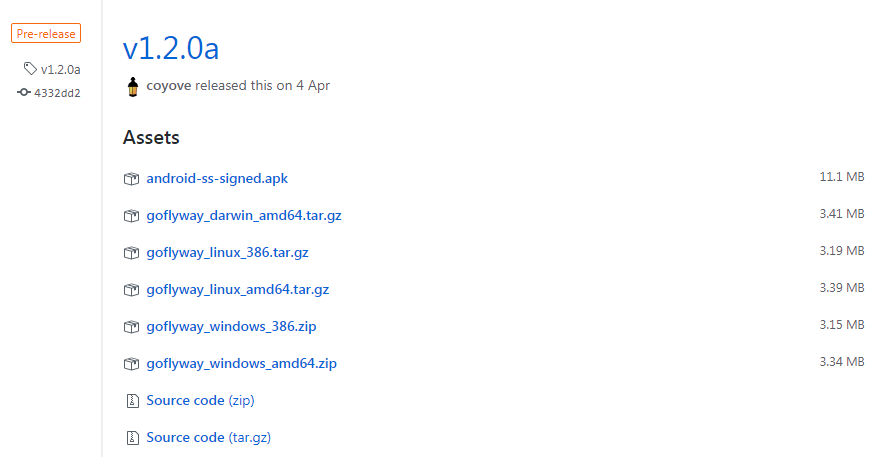
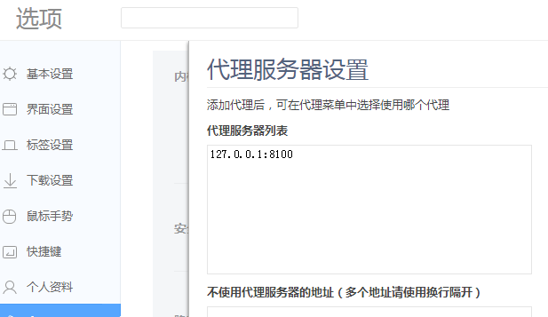
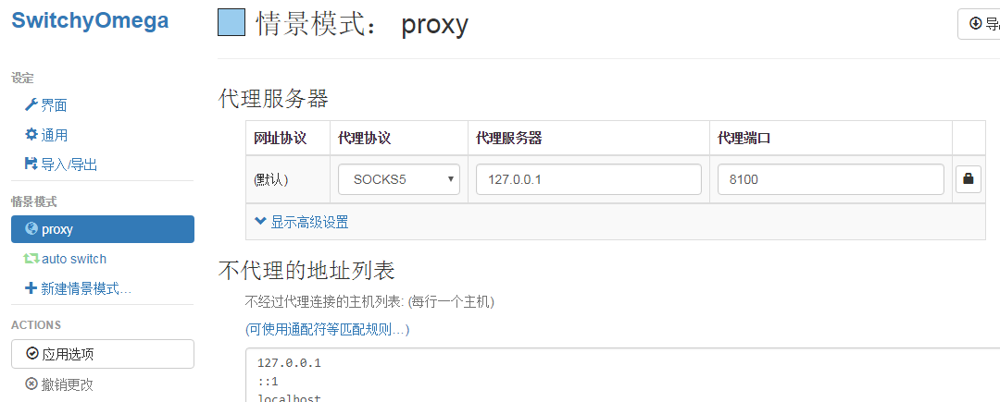
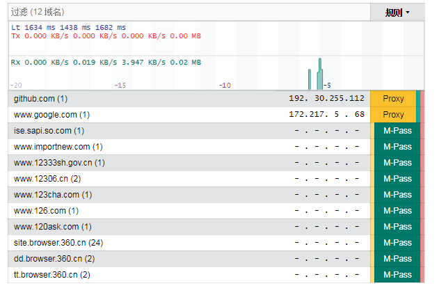

介绍
最近 ss 很慢很慢，重装了也没有用，遂去网上找替代品
然后发现了现在流行使用的 goflyway，正好目前在学 go 语言就研究了下
goflyway 是使用 go 语言写的一款优秀的 http/socket 代理软件，据说速度很快
项目地址coyove/goflyway
服务端安装
没有 装 ss 那么复杂，也根本不需要一键脚本之类的，直接从项目的 release 下载编译好的就行了，windows，linux 下载编译好的对应的版本就行了
傻乎乎的我还去安装 go 环境，又在 128M 的 VPS 上 go get 编译了 10 分钟….

wget https://github.com/coyove/goflyway/releases/download/v1.2.0a/goflyway_linux_amd64.tar.gz
tar -zxvf goflyway_linux_amd64.tar.gz
./goflyway -k=123456789 //默认端口8100
到此服务端就已经启动了
客户端安装
虽说是 http/socket 代理，但是直接在代理插件上直接写服务器的 ip 和代理端口是没用的，因为 goflyway 是做了混淆的，所以要特定的客户端连接服务端，然后再在本地启动一个本地代理才可以
其实 goflyway 的服务端和客户端是同一个
直接从 release 下载 windows 平台的就成了，当然 android 版的也有下载（基于 ss 客户端魔改的，需要卸载 ss 的客户端）
// -up 表示这是客户端，参数为服务端ip:port
// 图方便可以写个cmd脚本
// 默认在8100启动本地代理服务
goflyway -k=123456789 -up="xx.xx.xx.xx:8100"
然后再使用一些通用的代理软件填写本地的 ip 和端口就成了
比如说 360 极速浏览器自带的

比如说 Chrome 插件 Proxy SwitchyOmega

其他
设置端口
-l="ip:port"或-p="ip:port" 本地 ip 可以为空,客户端 ip 可以填域名,据说在 80 端口代理效果不错
设置用户名/密码
-a username:password服务端在设置了用户名和密码后，客户端当然也要写上一样的了，同时-k=xxxxx密码配置也就没用了
全局代理
客户端使用-g开启全局代理,这里的全局代理并不是代理本地软件，而是所有访问都走代理，不走白名单
白名单
在客户端同目录下放置chinalist.txt每行一个域名表示白名单
反向代理
goflyway 的服务端本质上是一个具有代理功能的 HTTP 服务器，您可以使用 -proxy-pass http://IP:PORT的方式打开 goflyway 的反向代理功能。
当服务端发现是代理请求的时候走代理，是正常请求时候返回反向代理的内容，一般用作迷惑
web 控制台
客户端在 (port+10) 会开启一个 web 控制台，可以用于查看访问情况，比如默认端口是 8100，则会在 8110 开启

便捷
服务端
goflyway移动到/home/goflyway
在/etc/rc.d/rc.local后追加开机启动命令
nohup /home/goflyway -k=123456789 -l=":80" > /home/goflyway.log 2>&1 &
chmod +x /etc/rc.d/rc.local
本地新建 cmd 脚本,在 9999 端口启动本地代理
goflyway -k=123456789 -l=":9999" -up="ip/domain:80"